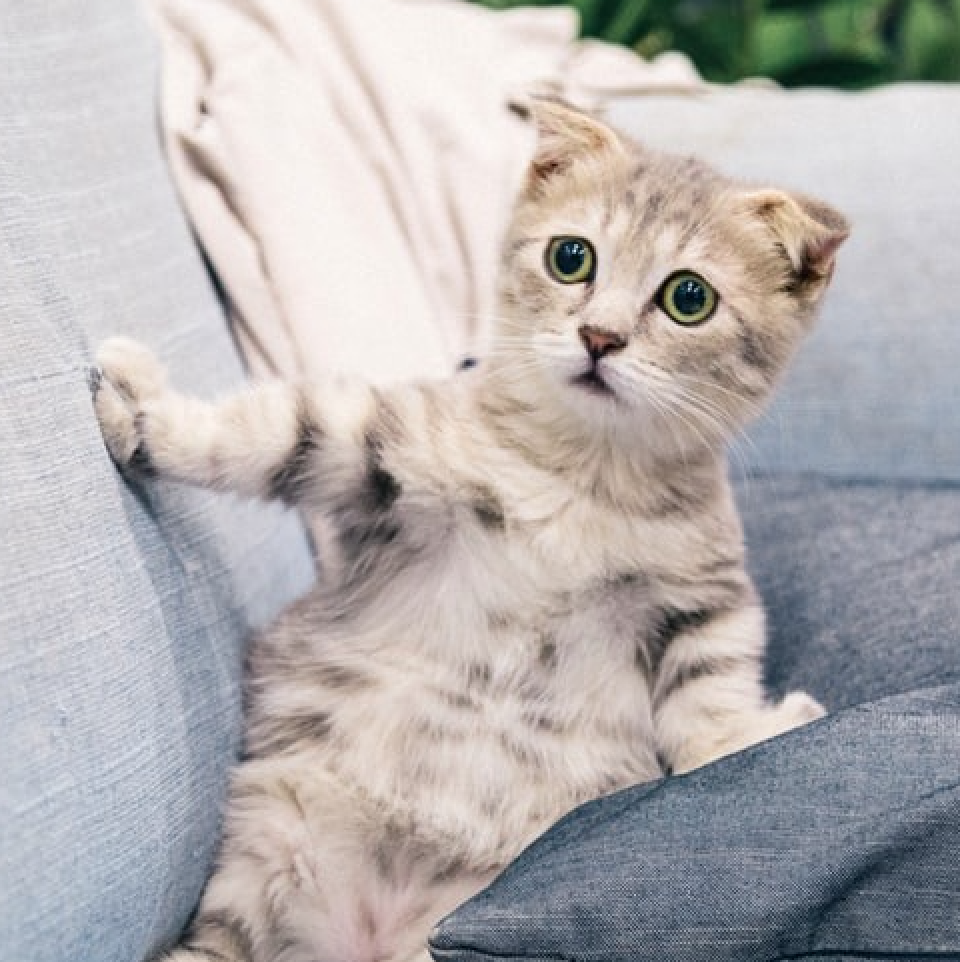
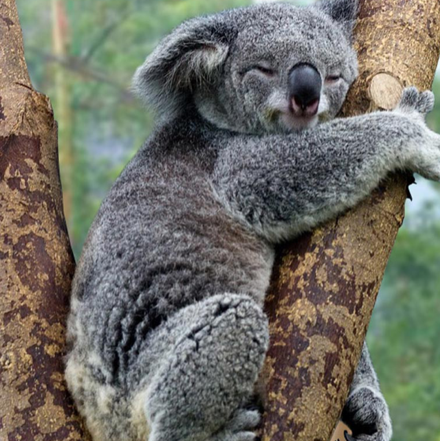

kotki to takie słodziaki, dowiedz się więcej na ich temat!
czy wiedziałeś TO na temat psów?
co to za udomowione szczury?
dowiedz się tego czego nie wiedziałeś odnośnie tych czworonogów!
czy wiesz co to za zwierzę?
wiedziałeś jak inaczej nazywa się ta urocza istota?
dowiedz się czegoś więcej na temat tych słodziaków!
czego jeszcze nie wiedziałeś o lemurach?

dorzuć swoje 3 grosze, czemu nie
wpis o kotkach bo zwykłe wiadomości są nudne
Kot domowy – udomowiony gatunek ssaka z rzędu drapieżnych z rodziny kotowatych.Koty zostały udomowione około 9500 lat temu i są obecnie najpopularniejszymi zwierzętami domowymi na świecie. Gatunek prawdopodobnie pochodzi od kota nubijskiego, przy czym w Europie krzyżował się ze żbikiem. Jest uznawany za gatunek inwazyjny.

wpis o pieskach bo są nawet lepsze od kotków
Pies domowy – udomowiona forma wilka szarego, ssaka drapieżnego z rodziny psowatych, uznawana przez niektórych za podgatunek wilka. Od czasu jego udomowienia powstało wiele ras, znacznie różniących się morfologią i cechami użytkowymi. Rasy pierwotne powstawały głównie w wyniku presji środowiskowej. Rasy współczesne uzyskano w wyniku doboru sztucznego.
wpis o chomikach bo też są uważane za urocze
Chomiki – podrodzina gryzoni z rodziny chomikowatych. Do rodziny chomikowatych zalicza się blisko 300 gatunków. Mysz domowa, myszarka leśna, suwak mongolski i inne myszowate są dalekimi krewnymi chomików. Jako zwierzęta domowe hodowane bywają: chomiczek syryjski, chomicznik malutki, chomik chiński, chomicznik dżungarski i chomicznik zabajkalski.
wpis o koniach bo powoli kończą mi się urocze zwierzęta
Konie – Koń po raz pierwszy został udomowiony prawdopodobnie na terenie północnego Kazachstanu w okresie kultury Botai tj. około 3,5 tys. lat p.n.e., natomiast ludność europejska dokonała tego ok. 1,5 tys. lat p.n.e. Obecnie przedstawiciele 18 z 21 współczesnych ras hodowlanych pochodzą od dwóch linii – arabskiej i turkmeńskiej.
wpis o kuokach bo zbyt mało osób wie o istnieniu tego zwierzęcia
Kuoka – gatunek ssaka z rodziny kangurowatych, jedyny przedstawiciel rodzaju kuoka. Występuje w południowo-zachodniej Australii oraz wyspach Rottnest i Bald, gdzie jest liczniejszy niż na kontynencie. Kuoka krótkoogonowa jest średniej wielkości (długość: 40–54 cm, długość ogona: 24,5–31 cm, masa: 2,7–4,2 kg) torbaczem zamieszkującym lasy tropikalne. Prowadzi nocny, ziemny tryb życia, dzień spędzając w gęstych zaroślach.
wpis o pandach tak o
panda – niedźwiedź bambusowy – gatunek drapieżnego ssaka z rodziny niedźwiedziowatych. Panda wielka zamieszkuje lasy bambusowe na wysokości 1200–4100 m n.p.m. (zimą schodzi do 800 m n.p.m.). Jej przynależność do drapieżnych nie ulega wątpliwości, jednak w rzeczywistości odżywia się pędami roślin (głównie bambusa), nie gardzi też rybami i małymi gryzoniami.
wpis o koalach mają teraz ciężki okeres
koala – gatunek torbacza z rodziny koalowatych, nadrzewne zwierzę roślinożerne, zamieszkujące wschodnią Australię. Koala schodzi na ziemię tylko po to, aby przejść na kolejne drzewo. Żyje samotnie lub w niewielkich grupach złożonych z samca i kilku samic. Jest jedynym współcześnie żyjącym przedstawicielem rodzaju Phascolarctos.


wpis o lemurach serio, kończą mi się pomysły
lemur – (Lemur catta) – gatunek ssaka z rodziny lemurowatych (Lemuridae), jedyny przedstawiciel rodzaju Lemur. Rodzaj i gatunek po raz pierwszy opisał Karol Linneusz w 1758 roku w jego dziele Systema Naturae. Jako miejsce typowe autor wskazał Madagaskar (łac. Habitat in Madagascar).